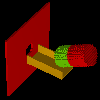
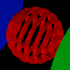
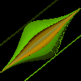
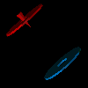
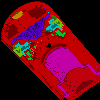
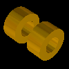

This directroy contains a collection of geometry files (GEM files) and other geometry definitions. A GEM file can be loaded into a potential array for use in SIMION by selecting "New" and then "Use Geometry File". These examples should serve to show the power of geometry files and perhaps help get you started on your way. Refer to the Geometry Files appendix of the printed SIMION manual for details. See also Doc(geometry_input_methods).
Geometries in this Directory:


_2dc.gem

Geometry Definitions in Other Directories
The following is a sampling of some interesting GEM files and geometry definitions in other directories. This is not a complete list.

.gem/.lua


STL Files in this Directory
The following STL file can be used with the SL Tools STL -> PA conversion utility.

Note: two_cylinder.stl.zip contains two_cylinder.stl (a single STL file containing two lens elements), as well as STL files for each individual lens (two_cylinder-1.stl and two_cylinder-2.stl). If you specify "two_cylinder-%.stl" for the "input file (STL)" in the SL Tools "STL->PA" function, SL Tools will load both two_cylinder-1.stl and two_cylinder-2.stl into a single PA# file, giving each lens element a different voltage index.
Geometries by Technique
- Macros: macro.gem, sinusoidal.gem, hexapole.gem, quad_hex.gem, sector.gem, sphere_aniso.gem, turning_quad.gem, uniform_bfield.gem, faraday_cage_rings_2dc.gem, polygon_regular.gem, sphere_mesh.gem, magnetic_sector\sector_3dp.gem, ionfunnel\funnel.gem
- Includes: detect.gem
- Anistropically scaled grid cells: sphere_aniso.gem
- rotate_fill: cone.gem, trap4.gem, torus.gem, disc_segmented.gem, elbow.gem, esa.gem, det_inc.gem
- Multipole: quad.gem, quad_hex.gem, disc_segmented.gem, trap1.gem, trap2.gem, trap3.gem, trap4.gem, turning_quad.gem, quad\quadout.gem, octupole\octupole.gem, twisted_rods_build.lua
- Electrostatic analyzer: esa.gem, cma2d.gem, cma2dp.gem, kingdon_trap\quadro_logarithmic*.gem/.lua, hda\r0_82.gem
- Surface enhancement: surface_enhancement\sc.gem, quad\quadout.gem, kingdon_trap\quadro_logarithmic*.gem/.lua, twisted_rods_build.lua
- Magnetic: uniform_bfield.gem, magnetic_sector\sector_3dp.gem
- Lua PA API: kingdon_trap\quadro_logarithmic_build.lua, surface_enhancement\sc_build.lua, swirl\*, twisted_rods_build.lua
- Analytic surfaces: sinusoidal.gem, kingdon_trap\quadro_logarithmic*.gem/.lua
- Multiple PAs: quad\quad*.gem, field_emission\fe_geom.gem, bender_cut\bend*.gem
Examples added in SIMION 8.2
- sphere_mesh.gem
See Also
- See the "Geometry Files" appendix of the printed SIMION user manual for details on GEM files.
- Doc(geometry_input_methods) - summary of various methods for defining geometries in SIMION.
- Advanced ASMS course has additional notes on GEM files.
History/Changes
- 2013-04-04: Add sphere_mesh.gem [8.2]
- 2013-04-04: Add polygon_regular.gem
- 2013-04-03: Add duct_rectangular_tapered.gem
- 2013-02-07: Add faraday_cage_rings_2dc.gem
- 2012-10-10: Add two_cylinder-1.stl and two_cylinder-2.stl to two_cylinder.stl.zip. This can be loaded as two_cylinder-%.stl in SL Tools.
- 2012-09-07: Add twisted_rods_build.lua
- 2012-08-28: Add link to einzel gem
- 2012-08-15: Add thumbnail images to README. Add disc_segmented.gem. Make tune.gem to cylindrical.
- 2011-08-19: Add cma2d.gem and cma2dp.gem
- 2011-08-10: Add sphere_aniso.gem, sector.gem, uniform_bfield.gem
- 2011-07-30: Add parallel_plate_capacitor_2d.gem
- 2010-10-18: Add quad_hex.gem
- 2010-07-02: Add turning_quad.gem
- 2010-01-02: Add sinusoidal.gem
- 2009-07-06: Add tetrahedron.gem (20060829) and cone.gem (20060812)
- 2009-05-20: Add hexapole.gem
- 2008-07-23: Add cross.gem
- 2008-01-01: Add macro.gem
- 2006-08-12: Add tune.gem
- Based on SIMION 7.0 Geometry folder.